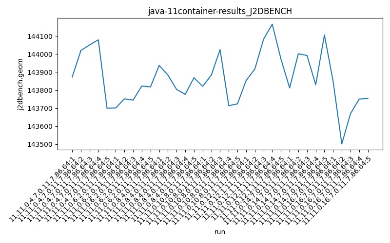
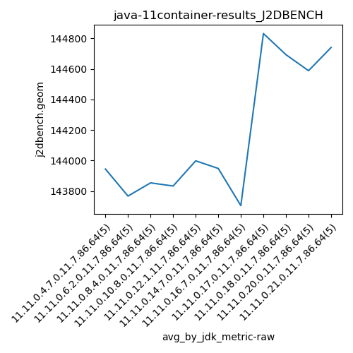
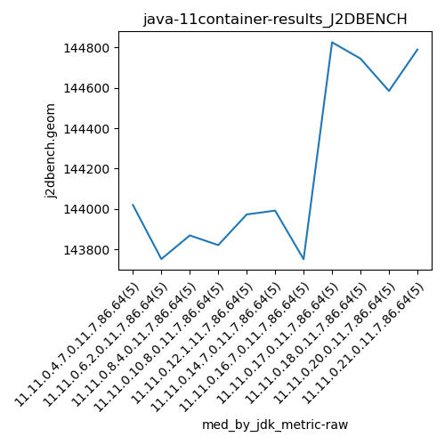

java-11 J2DBENCH
Context at bottom
/home/jvanek/git/benchmarks-in-nested-virtualisation-toolchain/final_results/container_results/container-results_J2DBENCH
java-11
J2DBENCH
container-results_J2DBENCH
final score
Expected number of java-11 JDKs: 11
1st avgmed_alljdks_metric:
/home/jvanek/git/benchmarks-in-nested-virtualisation-toolchain/final_results/result_processing.py /home/jvanek/git/benchmarks-in-nested-virtualisation-toolchain/final_results/container_results/container-results_J2DBENCH j2dbench.geom False
values: [143873, 144020, 144051, 144079, 143700, 143701, 143752, 143745, 143823, 143818, 143937, 143884, 143804, 143777, 143869, 143821, 143884, 144025, 143714, 143724, 143854, 143917, 144082, 144166, 143973, 143812, 144002, 143992, 143830, 144106, 143849, 143502, 143670, 143751, 143754, 144826, 144740, 144805, 144864, 144920, 144747, 144502, 144830, 144640, 144745, 144476, 144485, 144653, 144741, 144585, 144583, 144824, 144684, 144790, 144819]

Expected number of iterations: 5
final number of values: 55 out of 55
Pass rate: 100.0%
values: (143502, 144920, 144173.0909090909, 144002)

** accuracy from all jdks and runs
more is better
MIN: 143502
MAX: 144920
AVG: 144173.0909090909
MED: 144002
Relative differences 1:
MIN-MAX: 1.0 %
MIN-AVG: 0.0 %
MIN-MED: 0.0 %
MAX-MIN: -1.0 %
MAX-AVG: -1.0 %
MAX-MED: -1.0 %
AVG-MED: -0.0 %
stored to java-11.properties. sort | uniq that!
2nd avgmed_by_jdk_metric:
values: [143944.6, 143767.8, 143854.2, 143833.6, 143998.4, 143948.4, 143705.2, 144831.0, 144692.8, 144588.0, 144740.0]

values: [144020, 143752, 143869, 143821, 143973, 143992, 143751, 144826, 144745, 144585, 144790]

values: (143705.2, 144831.0, 144173.0909090909, 143948.4)
values: (143751, 144826, 144193.0909090909, 143992)

** accuracy from all jdks where runs were avged
more is better
MIN: 143705.2
MAX: 144831.0
AVG: 144173.0909090909
MED: 143948.4
Relative differences 1:
MIN-MAX: 1.0 %
MIN-AVG: 0.0 %
MIN-MED: 0.0 %
MAX-MIN: -1.0 %
MAX-AVG: -0.0 %
MAX-MED: -1.0 %
AVG-MED: -0.0 %
stored to java-11.properties. sort | uniq that!
** accuracy from all jdks where runs were medianed
more is better
MIN: 143751
MAX: 144826
AVG: 144193.0909090909
MED: 143992
Relative differences 1:
MIN-MAX: 1.0 %
MIN-AVG: 0.0 %
MIN-MED: 0.0 %
MAX-MIN: -1.0 %
MAX-AVG: -0.0 %
MAX-MED: -1.0 %
AVG-MED: -0.0 %
stored to java-11.properties. sort | uniq that!
/home/jvanek/git/benchmarks-in-nested-virtualisation-toolchain/final_results/container_results/container-results_RADARGUNs3
java-11
J2DBENCH
/home/jvanek/git/benchmarks-in-nested-virtualisation-toolchain/final_results/container_results/container-results_RADARGUNs1
java-11
J2DBENCH
/home/jvanek/git/benchmarks-in-nested-virtualisation-toolchain/final_results/container_results/container-results_DACAPO
java-11
J2DBENCH
/home/jvanek/git/benchmarks-in-nested-virtualisation-toolchain/final_results/container_results/container-results_SPECJBB
java-11
J2DBENCH
/home/jvanek/git/benchmarks-in-nested-virtualisation-toolchain/final_results/container_results/container-results_JMH
java-11
J2DBENCH
pass rates:
container-results_J2DBENCH=100.0%
Context:
- container_results
- J2DBENCH